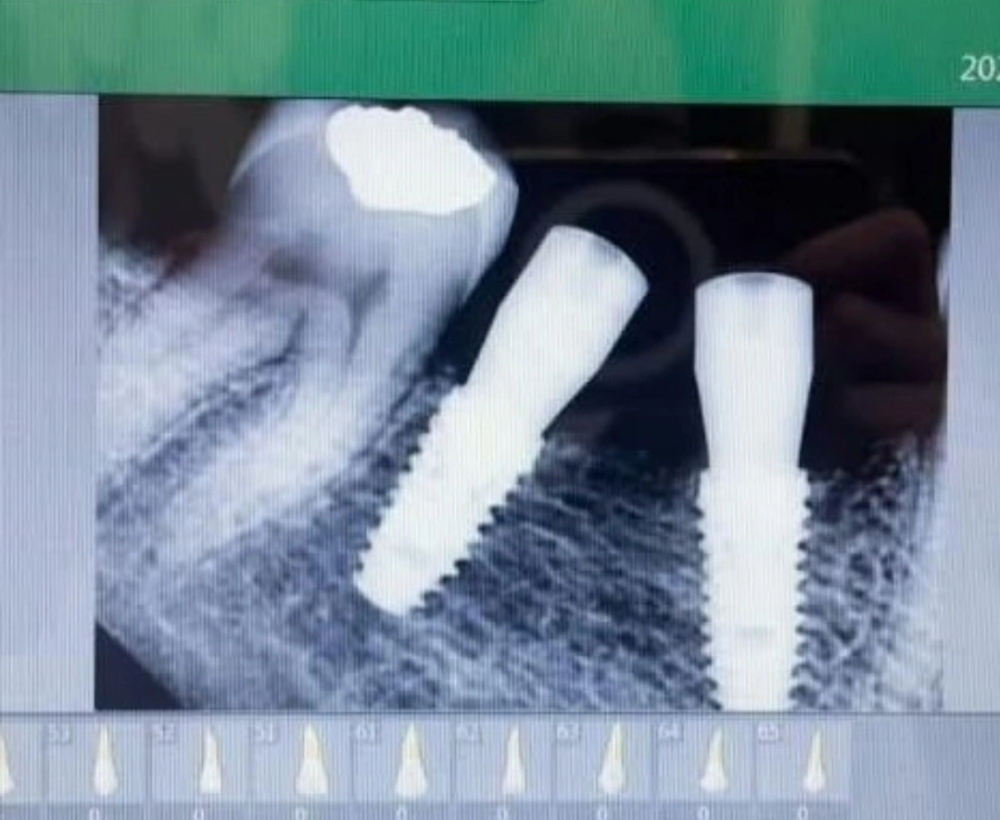

نسخه استخراجشده؛ ترجمه یا تأیید علمی انجام نشده است. وضعیت: captured
دو ایمپلنت مجاور جهت نامناسب دارند و بدون اسکنر، جا انداختن همزمان کوپینگها ممکن نشده است. دندان طبیعی پشت آنها تیلت دارد؛ اگر با مسیر نشست تداخل دارد، پیش از هر دو روش اصلاح میشود.
هدف، دادن معیار جهت اباتمنت اول به لابراتوار برای ساخت هماهنگ اباتمنت دوم است؛ رستوریشنهای نهایی جدا ساخته میشوند.

اگر معیار رابطهی جهتها وجود دارد، از هر ایمپلنت جدا قالب گرفته میشود و لابراتوار اباتمنت و فریم هر کدام را جدا میسازد. سپس در دهان اباتمنتها بسته، فریمها گذاشته و پیکآپ گرفته میشود. اگر لابراتوار جهتها را نداند، ساخت مستقل میتواند مسیر نشست و برداشتن را متداخل و سمان را سخت کند؛ پیکآپ جای معیار هنگام ساخت را نمیگیرد.
چون روکشها متصل نیستند، توازی دقیق اباتمنتها شرط لازم نیست. هماهنگی تا حد امکان، نشاندن کنار هم و سمان را آسانتر میکند؛ اختلاف شدید مسیرها همچنان مشکلساز است. با زاویهی واقعاً مشکلساز، ساخت اباتمنت اول و قالب همراه دوم راه مطمئنتر برای تأمین معیار است.